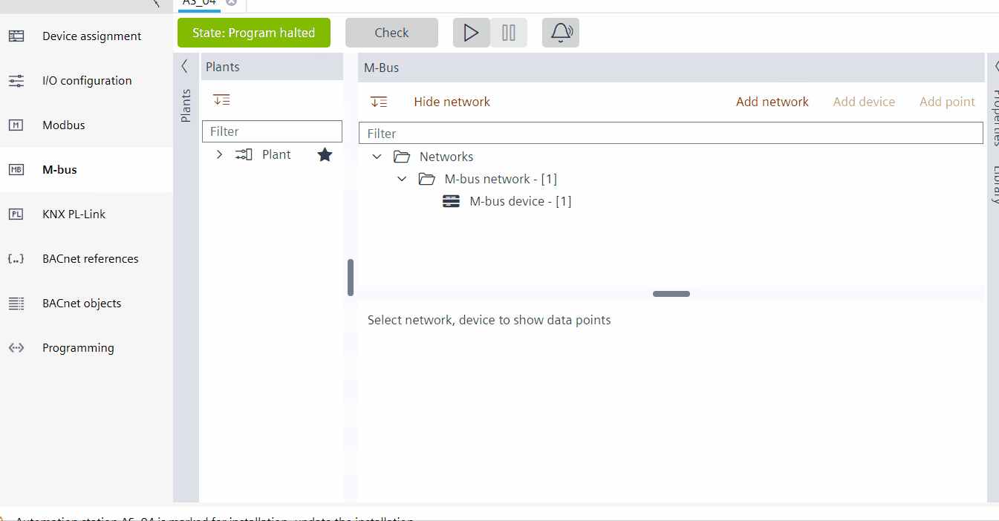
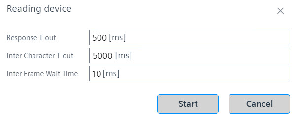

从在线设备数据读取和创建 M-bus 数据点
从在线 M-bus 设备读取并创建数据点。

- Before you add a M-bus network, make sure to configure and load the device.
Configure and download.
- Go to Engineering.
- Open the M-bus task.
- Click Add network.
- Select the M-bus (MBUS) port in the Port field and click OK.
- You have added an M-bus network.
- Click to go online.
- Start the network scan.
M-bus network scan. - Right-click the device in the orphan list and select Read device data.
- The Reading device dialog box displays, where a trace of all the online device data points is read.

- Select the Response T-out, Inter Character T-out and Inter Frame Wait Time in the respective fields and click Start. For more information on the time out characters, see Reading device - Time out characters.
- After a few seconds, the list of the data points in the online device displays.
- You can see all the discovered data points and ABT site will propose a BACnet object mapping.
- Select and tick/check the required data points and click Create.
Note: Creating a customized device will force ABT Site to go offline automatically. - The M-bus editor goes offline and the customized M-bus device is created, which displays under M-bus network.
- Click on the newly created M-bus device.
- The data points display below in the workplace table.
- Check the properties of the newly created M-bus device in the Properties tab.

ABT 站点只能为发现的数据点提出集成变体。如果需要进一步定制，用户应该手动进行。
任何主地址为0的设备，在设备读出后Network address在线模式下将更改为253。
对于主地址为 0 的多个设备，唯一性检查被禁用。
Reading device - Time out characters
读取设备超时字符定义了要传输的 M-bus 消息的时间范围。字符超时共有三种：
- Inter character T-out: The entire M-bus message frame must be transmitted as a continuous stream of characters. The standardized inter-character timeout on the receiver is 22 bit times. Any gap > 22 bit times shall be considered as the end of a telegram.
- Inter frame wait time: The minimum inter-frame wait time is 11 bit times between a received response frame and sending of the next request frame.
- Response T-out: M-Bus standard defines the maximum acceptable delay time which leads to a response timeout in the manager. The standard delay time between the end of a manager telegram and the beginning of the subordinate response telegram shall be between 11 bit times and (11 + 330 bit times + 50 ms)